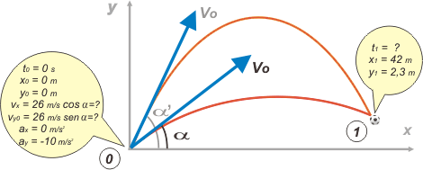

|
NO ME SALEN
PROBLEMAS RESUELTOS DE FÍSICA DEL CBC
(Tiro oblicuo)
|
|

|
Adicional No me salen 5.15 - El arquero Nilatoco efectúa un saque (desde el piso) con una velocidad inicial de 26 m/s. El gran goleador Gabriel, que está parado a 42 metros del punto desde donde se efectuó el disparo, intercepta el balón en el aire, a 2,30 metros del piso. Calcular el ángulo con la horizontal formado por el vector velocidad inicial de la pelota.
Este ejercicio me lo envió mi colega Augusto Maquieira, de Henderson, Provincia de Buenos Aires, para que lo analicemos juntos. Me parece que se trata de un ejercicio complicado para plantearle a nuestros estudiantes del secundario, o recién salidos. Sin embargo posee un atractivo interesante: me permite mostrarles que han aprendido física, aunque no hayan podido llegar al resultado.
Empecemos, como siempre, con un esquema: |
|  |
|
|
Hice dos trayectorias porque yo ya conozco el final de la historia y sé que hay dos opciones, entre las que no se puede decidir físicamente. Es decir... tenemos un resultado doble. Vos no tenés por qué saberlo de antemano... pero para no tener que rehacer el esquema puse las dos trayectorias desde el vamos.
Ahora, si tenés a la vista los modelos de ecuación horaria de un tiro oblicuo... |
|
|
x = xo + vx ( t – to )
y = yo + voy ( t – to ) + ½ g ( t – to )²
vy = voy + g ( t – to )
|
modelos
(para cualquier TO) |
| ... podemos empezar. Lo primero que hacemos es armar las ecuaciones horarias de nuestro pelotazo, reemplazando las constantes (to , xo , yo , vx , voy , y g) que figuran en el globito del instante inicial. |
|
x = 26 m/s . cos α . t
y = 26 m/s . sen α . t – 5 m/s² . t²
vy = 26 m/s . sen α – 10 m/s² . t
|
ecuaciones
(para todo el tiro del arquero) |
| A la tercera ecuación, la de velocidad, ya le damos licencia con goce de sueldo... porque en este ejercicio no le vamos a pedir que trabaje. A las otras dos sí: vamos a pedirles que hablen del momento del cabezazo. Dicen lo siguiente: |
|
42 m = 26 m/s . cos α . t1
2,3 m = 26 m/s . sen α . t1 – 5 m/s² . t1²
|
ecuaciones especializadas
(sólo hablan del momento del cabezazo) |
Este es el momento culminante del ejercicio. Acá es donde todos los estudiantes de física pueden gritar a los cuatro vientos ¡estoy aprendiendo física y los ejercicios me salen! Porque si lo mirás con cariño, acabás de escribir dos ecuaciones con dos incógnitas... y no dudes de que eso tiene solución. O sea, que operando algebraicamente podemos hallar el valor de α -que es el que solicita el enunciado-, y también de t1, que no lo pide, pero así podríamos contarle a Nilatoco cuánto tiempo estuvo en vuelo su balón.
Cuando una de las incógnitas es el argumento de una función trigonométrica -un ángulo-, el álgebra que se requiere no es para pibes que juegan en la reserva. Los profesionales lo sacan, pero no siempre aciertan un camino rápido y contundente. Te muestro un camino que me pareció bastante directo:
De la ecuación de x despejo t1:
t1 = 1,615 s / cos α
Ahora eso lo meto en la segunda ecuación, la de y, reemplazando t1. No te olvides que senα/cosα = tgα y que cosα . cosα = (cosα)² = cos²α.
2,3 m = 42 m . tg α – 13,05 m / cos²α
Vuela el metro, que multiplica en todos los términos de ambos miembros. Pero igual ¿ves que se pone peludo?, porque aún cuando ahora tenemos una sola incógnita, α, aparece como argumento de dos funciones trigonométricas distintas: coseno y tangente. Por suerte, Pitágoras (o algún fiel pitagórico) encontró una relación entre ambas funciones: 1 / cos²α = 1 + tg²α (que no es otra cosa que una derivación sencilla de la relación pitagórica cos²α + sen²α = 1).
2,3 = 42 . tg α – 13,05 (1 + tg²α)
2,3 = 42 . tg α – 13,05 – 13,05 . tg²α
0 = – 15,35 + 42 . tg α – 13,05 . tg²α
Algo avanzamos, porque lo que tenés ante tus ojos es una ecuación cuadrática en la que la incógnita es tg α, y los coeficientes de esa ecuación son A = – 13,05; B = 42; y C = – 15,35. De modo que resolviendo la cuadrática con la formulita de los griegos encontraremos dos valores de tg α que la satisfacen. Ellos son: |
 |
tg α = 0,42, lo que nos da un ángulo α = 22,8º
tg α' = 2,81, lo que nos da un ángulo α' = 70,4º
|
|
|
| No se puede decidir físicamente cuál de los dos es el buscado. Pero sí futbolísticamente: si Nilatoco saca del arco con un ángulo de 70 grados... no juega en primera en el próximo partido. |
|
|
|
|
|
| DESAFIOS: ¿Me parece a mí, o hay dos valores posibles para t1? ¿No tendrían que sumar 90 grados los ángulos hallados? ¿Con qué velocidad le llega la pelota a Gabriel, el delantero? ¿Con qué ángulo debería patear Nilatoco para alcanzar la distancia más alejada de su arco? ¿Cuál sería esa distancia? |
|
 |
| |
|
| Algunos derechos reservados (en criollo: no podés publicarlo a tu nombre, ¿entendiste? Mirá que tengo un boga repesado, ¿eh?).
Eso sí, se permite su reproducción citando la fuente. Última actualización may-08. Buenos Aires, Argentina. |
|
|
|